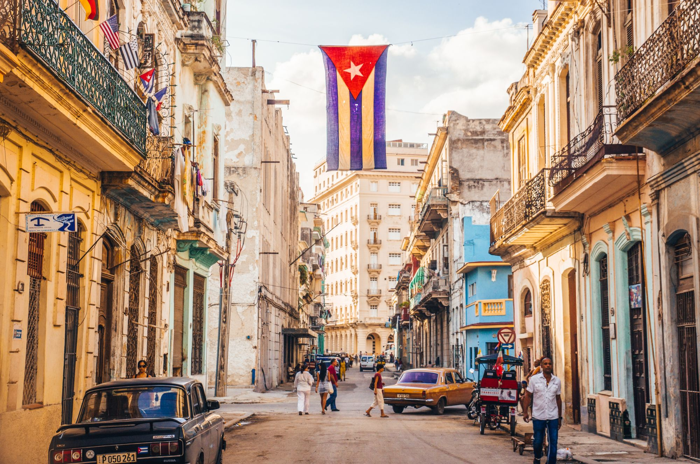

COLAZIONE TURCA
Questa trae origine dalla cucina ottomana, che può essere descritta come la fusione e il raffinamento della cucina dell'Asia centrale, del Medio Oriente, del Mediterraneo, del Caucaso e dei Balcani.

COLAZIONE CUBANA
La cucina cubana rappresenta un misto delle culture gastronomiche spagnole, caraibiche ed africane: le prime due fanno riferimento soprattutto nelle tecniche di cucina, mentre la terza si fa sentire nell'uso delle spezie.

COLAZIONE INGLESE
La colazione inglese nacque in età medioevale, quando i contadini, che dovevano alzarsi presto la mattina a fronte di una faticosa giornata di lavoro, consumavano a colazione dei cibi molto calorici.